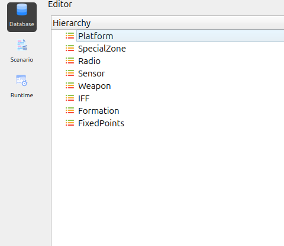

Navigation Panel Overview
The application features a Navigation Panel located on the left side of the interface. This panel provides quick access to the primary operational modules of the system. Each button in the panel switches the workspace to a specific editor or environment.
{kind=link}

The Navigation Panel includes the following modules:
1. Database
Selecting Database opens the Database Editor.
This module is responsible for managing all foundational data used in the system, including:
platforms
sensors
weapons
IFF configurations
and other core components
It serves as the central workspace for creating, modifying, and organizing database entities.
2. Scenario
Selecting Scenario switches the interface to the Scenario Editor.
This module enables users to:
create and configure mission scenarios
place entities on the map
define behaviors
set operational parameters
It provides tools for building and customizing the overall simulation environment.
3. Runtime
Selecting Runtime transitions the application to the Runtime View.
This environment is used to:
execute the simulation
monitor system behavior
observe interactions in real time
validate operational workflows
Users can track scenario dynamics and assess simulation performance directly within this view.